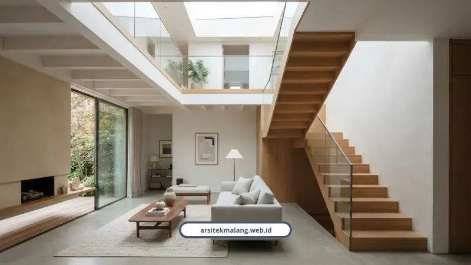

Ringkasan Inti
- Solusi presisi mengatasi masalah lahan sempit (kavling 6x10 hingga 6x12 meter) di Malang melalui tata ruang vertikal efisien dan inner courtyard.
- Filosofi tropis modern mengutamakan ventilasi silang dan cerobong void udara alami agar hunian tetap adem tanpa bergantung penuh pada AC.
- Penggunaan arsitek profesional menghemat biaya material 10–20% dan mencegah risiko pembengkakan anggaran (boncos) di lapangan hingga 20–40%.
- Gambar kerja DED terstandarisasi arsitek berlisensi IAI & STRA menjamin perizinan PBG lolos verifikasi portal SIMBG Pemkot dan Pemkab Malang sesuai PP 16 Tahun 2021.
- Dukungan skema RAB mengikat tanpa biaya siluman, garansi struktur 100%, serta durasi rancang cepat 2–4 minggu.
Daftar Isi Artikel
- Mengapa Membangun Rumah 2 Lantai di Malang Butuh Perencanaan Khusus?
- Trik Efisiensi Tata Ruang Mewah untuk Kavling Minimalis 6x10 dan 6x12 Meter
- Pendapat Ahli: Pentingnya Struktur Kokoh dan Pengelolaan Cahaya
- Menghindari Boncos: Transparansi RAB vs Risiko Tanpa Arsitek
- Legalitas Aman: Pengurusan PBG Malang via SIMBG Bersama Arsitek Berlisensi IAI
- Testimoni Klien: Pengalaman Membangun Hunian Impian di Malang Raya
- FAQ Seputar Arsitek Rumah 2 Lantai Malang
Jasa arsitek rumah 2 lantai di Malang menjawab masalah lahan sempit dengan tata ruang efisien, RAB presisi, dan legalitas PBG resmi. Hasilnya rumah tetap terasa lapang, adem, dan mewah meski kavling terbatas.
Saya sering ketemu klien yang datang dengan wajah pasrah. Tanahnya cuma 6x10 meter, tapi maunya kamar tiga, ruang keluarga lega, dan carport muat dua motor plus mobil.
Kedengarannya mustahil. Tapi di lapangan, itu bukan hal aneh lagi buat kami.
Mengapa Membangun Rumah 2 Lantai di Malang Butuh Perencanaan Khusus?
Harga tanah di Malang, terutama di Lowokwaru, Sukun, Dau, Sengkaling, Lawang, dan Kedungkandang, terus naik tiap tahun. Akibatnya keluarga muda rata-rata cuma dapat kavling 6x10 sampai 6x12 meter persegi.
Dengan lahan sesempit itu, jalan satu-satunya ya membangun ke atas. Tapi bukan asal tumpuk lantai dua, karena kalau salah hitung, rumah malah jadi gelap dan pengap.
Di sinilah peran arsitek rumah 2 lantai jadi krusial. Bukan cuma soal gambar cantik, tapi bagaimana lahan sempit tadi diubah jadi hunian dengan 3 kamar tidur, ruang keluarga luas, carport, sampai inner courtyard kecil tanpa terasa sesak.
Trik Efisiensi Tata Ruang Mewah untuk Kavling Minimalis 6x10 dan 6x12 Meter
Rumah kecil itu sebenarnya bukan masalah luas, tapi soal cara ngatur udara dan cahayanya. Ini beberapa trik yang biasa kami pakai di lapangan.
- Open plan, hilangkan sekat masif antara ruang tamu, keluarga, dan dapur
- Split level untuk lahan sempit atau berkontur miring
- Bukaan cahaya lebar dan skylight biar sinar matahari sampai ke tengah rumah
- Furnitur built-in custom, misalnya rak di bawah tangga
- Cermin dinding besar dipadu warna cerah biar ruangan terasa lebih dalam
- Pintu geser atau lipat, lebih hemat ruang dibanding pintu ayun
- Inner courtyard 10 sampai 15 persen dari lahan sebagai cerobong udara alami
Konsep Open Plan dan Sirkulasi Tropis Modern Tanpa AC
Filosofi yang kami pegang adalah tropis modern minimalis. Ventilasi silang dan cerobong udara vertikal dibuat sejak awal desain, bukan tempelan belakangan.
Efeknya rumah 2 lantai di Malang bisa tetap adem alami. Nggak melulu gantung nasib ke AC yang tagihannya bikin dompet nangis tiap bulan.
Kalau penasaran soal detail rekayasa udara dan bukaan atas rumah, kami sudah bahas tuntas di artikel desain void rumah yang fokus pada strategi pencahayaan alami rumah 2 lantai.

Optimasi Ruang Vertikal dan Inner Courtyard
Split level jadi jurus favorit buat lahan sempit maupun berkontur. Beda tinggi antar ruang setengah tingkat bikin sirkulasi lebih dinamis tanpa buang banyak lahan buat tangga.
Inner courtyard yang disisakan 10 sampai 15 persen dari lahan berfungsi sebagai paru-paru rumah. Selain estetik, ini yang bikin rumah nggak berasa kayak kotak sepatu bertingkat.
Catatan Arsitek Malang
Pada kavling berdimensi 6x10 meter, kunci kenyamanan rumah 2 lantai terletak pada peletakan void tangga yang terhubung dengan skylight atap. Void ini memicu efek cerobong (stack effect) yang menyedot hawa panas naik dan keluar, sehingga sirkulasi udara lantai satu tetap dingin secara pasif sepanjang siang.
Pendapat Ahli: Pentingnya Struktur Kokoh dan Pengelolaan Cahaya
Elias Vance, Kepala Arsitek kami dengan pengalaman lebih dari 20 tahun, punya pandangan yang selalu saya ingat.
"Rumah kecil bukan berarti harus terasa kecil. Yang bikin sesak itu bukan luasnya, tapi cara sirkulasi udara dan cahayanya dikelola."
Marcus Thorne, Kepala Rekayasa dan Struktur kami, menambahkan soal pentingnya fondasi teknis yang benar.
"Kekuatan struktur itu nomor satu, apapun kondisi tanahnya. Tapi legalitas juga sama pentingnya, karena rumah yang bagus tapi izinnya bermasalah cuma jadi beban di kemudian hari."
Kalau lahan Anda termasuk berkontur atau di area perbukitan Malang Raya, kami sudah rangkum solusinya di artikel struktur rumah 2 lantai yang membahas pondasi dan dinding penahan tanah secara teknis.
Menghindari Boncos: Transparansi RAB vs Risiko Tanpa Arsitek
Ini bagian yang paling sering bikin orang trauma. Membangun rumah tanpa arsitek berisiko biaya membengkak 20 sampai 40 persen gara-gara revisi dan bongkar pasang di lapangan.
Sebaliknya, pakai arsitek profesional justru bisa menghemat biaya material 10 sampai 20 persen. Nilai jual properti pun naik 10 sampai 15 persen, dan biaya operasional tertekan 20 sampai 35 persen.
Kami menerapkan skema RAB mengikat berdasarkan volume pekerjaan dan spesifikasi material SNI. Nggak ada biaya siluman yang muncul tiba-tiba di tengah proyek.
Kalau Anda butuh gambaran angka lebih detail soal biaya per meter persegi di Malang tahun ini, silakan cek pembahasan lengkapnya di artikel biaya rumah 2 lantai yang sudah kami susun berdasarkan data lapangan terbaru.
Legalitas Aman: Pengurusan PBG Malang via SIMBG Bersama Arsitek Berlisensi IAI
Muhammad Musyaffa, Arsitek Principal dan Lead Structural Estimator kami dengan pengalaman lebih dari 10 tahun, memastikan setiap rancangan dikaji lewat RAB presisi dan gambar kerja terstandarisasi berlisensi IAI dan STRA.
Standarisasi ini penting supaya berkas lolos verifikasi PBG di portal SIMBG, baik untuk wilayah Pemkot maupun Pemkab Malang.
Sesuai PP 16 Tahun 2021, bangunan wajib memenuhi standar 4K yaitu Keselamatan, Kesehatan, Kenyamanan, dan Kemudahan. Ini mencakup ketahanan struktur terhadap gempa sampai sistem proteksi kebakaran.
Sarah Chen, Manajer Proyek kami, mengawal seluruh tahap pengerjaan dari blueprint sampai finishing. Tujuannya satu, eksekusi tepat waktu tanpa penyimpangan dari rencana awal.
Testimoni Klien: Pengalaman Membangun Hunian Impian di Malang Raya
Bukti paling jujur dari sebuah layanan ya omongan orang yang sudah pernah pakai. Berikut beberapa cerita klien kami.
"Hasil desain rumah kami sangat memuaskan. Tim Arsitek Malang sangat responsif dan memahami keinginan kami. Pembangunan selesai tepat waktu sesuai jadwal."
— Budi Santoso, Pemilik Rumah di Malang"Renovasi rumah lama kami menjadi tampak modern seperti rumah baru. Tim sangat profesional, cepat, dan harga kompetitif. Sudah 3 tahun dan kualitasnya tetap terjaga."
— Maya Sari, Pemilik Rumah di Batu"Transparansi RAB dan laporan progres berkala membuat kami tenang selama proses pembangunan berlangsung."
— Rizky Hermawan, Manager PT Maju BersamaFAQ Seputar Arsitek Rumah 2 Lantai Malang
Berapa Lama Proses Desain Rumah 2 Lantai oleh Arsitek?
Proses rancang di kami rata-rata 2 sampai 4 minggu untuk paket jasa arsitek 3D lengkap dengan DED dan render 4K. Durasi ini sudah termasuk revisi awal sebelum masuk tahap gambar kerja final.
Kalau lanjut ke tahap konstruksi turnkey, kami juga memberi garansi struktur 100 persen. Jadi bukan cuma gambar bagus di atas kertas, tapi eksekusi di lapangan juga terjamin.
Apakah Rumah 2 Lantai di Lahan Sempit Pasti Terasa Pengap?
Tidak, asal sirkulasi udara dan cahayanya direncanakan sejak awal desain. Kuncinya ada di open plan, bukaan lebar, dan void udara vertikal, bukan di luas tanahnya.
Banyak klien kami dengan kavling 6x10 meter justru mengaku rumahnya terasa lebih adem dan terang dibanding rumah lama mereka yang lebih luas tapi minim bukaan.
Berapa Persen Biaya Jasa Arsitek dari Total RAB Pembangunan?
Umumnya biaya jasa arsitek berkisar 5 sampai 8 persen dari total RAB pembangunan. Angka ini sepadan kalau dibandingkan risiko boncos 20 sampai 40 persen akibat kesalahan teknis tanpa arsitek.
Di kami, komponen ini sudah termasuk gambar arsitektur, rencana struktur, sampai dokumen RAB definitif yang siap dipakai untuk pengurusan PBG.
Konsultasikan Desain Rumah 2 Lantai Impian Anda
Diskusikan kebutuhan tata ruang lahan sempit, gambar 3D DED presisi, dan pengurusan PBG resmi bersama tim Arsitek Malang.

Naura Regyna Putri
Penulis & Tim Riset Arsitektur Maroon Arsitek Malang, spesialis perencanaan rumah bertingkat, efisiensi tata ruang lahan sempit, dan pengurusan PBG/SIMBG.